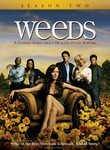

Weeds
Stephen Klancher
...has seen 1
...has seen 0 hours
...has not seen 1.7 hours

Timeline
Most Recent:
Corn Snake
...has seen 1
...has seen 0 hours
...has not seen 1.7 hours
Timeline
Most Recent:
Corn Snake


If You Work For a Living, Then Why Do You Kill Yourself Working? (2008) Airs on 2008-09-15
S4 - E13 of Weeds
S4 - E13 of Weeds